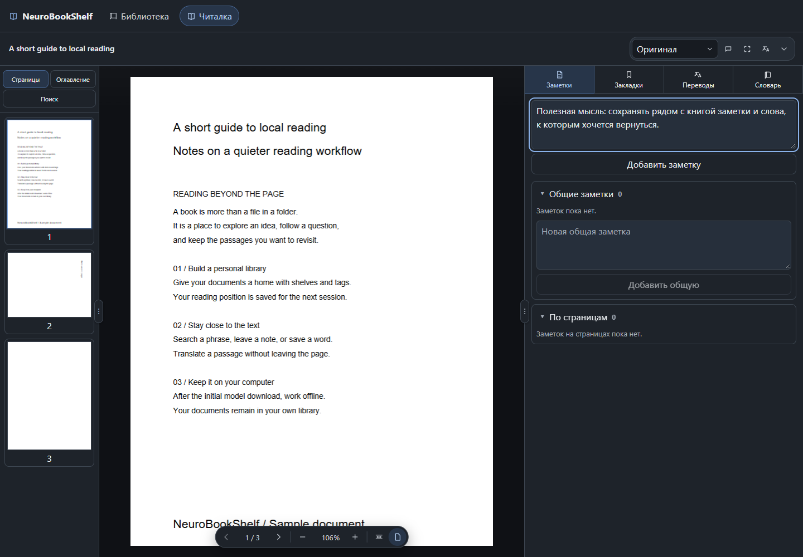

Порядок на полках
Импортируйте PDF, распределяйте по полкам и тегам. Читалка запоминает страницу и масштаб.
PDF-библиотека для книг, статей и идей, к которым хочется вернуться. Чтение, заметки, OCR и перевод — на вашем компьютере.
Windows x64 · macOS Apple Silicon

Соберите свою библиотеку и работайте с текстом в одном месте. Программа предназначена для PDF и не требует аккаунта.
Импортируйте PDF, распределяйте по полкам и тегам. Читалка запоминает страницу и масштаб.
Выделяйте область или переводите страницы в фоновой очереди. Доступны English ↔ Russian и French ↔ English, дополнительные пары — в каталоге моделей.
Оставляйте заметки и закладки, собирайте слова в словаре книги или общем словаре.
Python и библиотеки уже включены в приложение. Вручную устанавливать среду разработки не нужно.
Загрузите стабильную версию со страницы GitHub Releases. Там же доступны контрольные суммы файлов.
Ранняя версия: Windows пока без сертификата издателя, macOS — без нотарификации. Система может предупредить при запуске. Инструкция по установке.
Чтение, OCR и перевод выполняются локально. При установке моделей скачиваются их файлы; PDF для обработки в облако не отправляются.
В 0.2.0 доступны English ↔ Russian и French ↔ English, каталог дополнительных пар, выбор направления, отмена загрузки и русский/English для интерфейса. OCR пока распознаёт английский; другие языки переводятся из текстового слоя PDF.
Поддерживаются только PDF. Сложная вёрстка, таблицы и некачественные сканы могут распознаваться и переводиться неточно. EPUB и готовые Linux-пакеты пока не поддерживаются.
Откройте предложение или вопрос в GitHub Issues. Для этого потребуется аккаунт GitHub. Перед отправкой проверьте, не обсуждалась ли идея раньше.